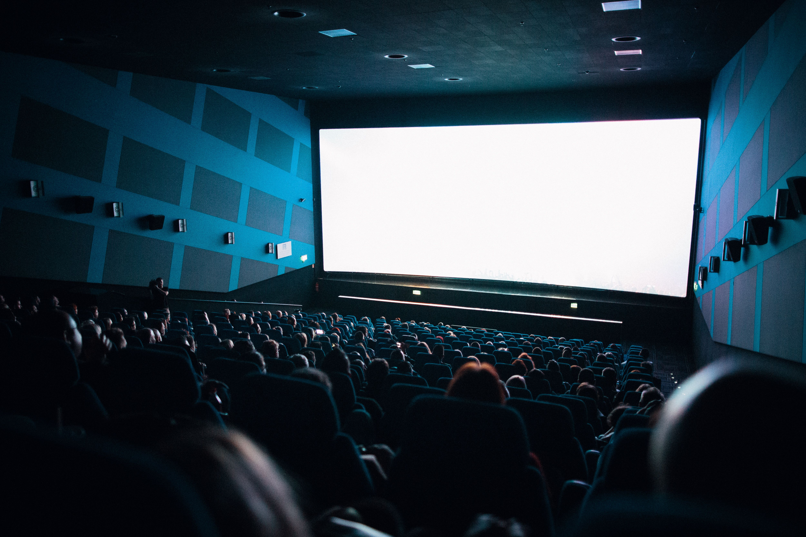

Manifiesto
Desde el año 2025 comencé a hacer una especie de catálogo personal con directores y sus películas, señalando las que vi y las que no, y realizando una ponderación sobre estas

Desde el año 2025 comencé a hacer una especie de catálogo personal con directores y sus películas, señalando las que vi y las que no, y realizando una ponderación sobre estas